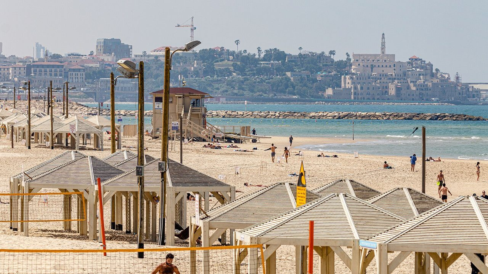

Race, Tel Aviv Promenade

Behind
Best +0:01
371W
Target 418 W-47 W
- Cadence
- 87rpm
- Heart
- 140bpm
- Speed
- 26.5km/h
Cool-down13 of 13
0:44
Finish
+0.0%
2 m climbed
10.41 km
13
Resistance / 32
Solo races your best-time ghost: position reads Ahead or Behind, and solo alone gets a Pause button. Frozen at 23:16.